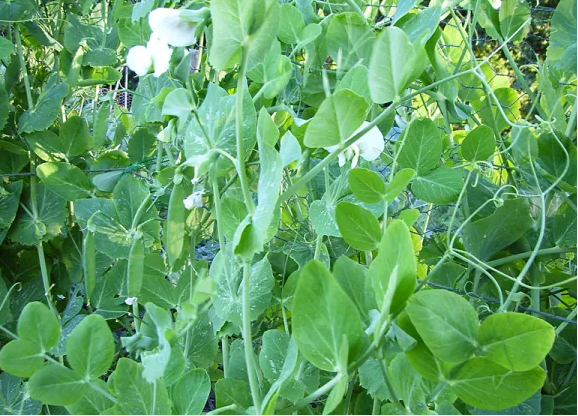

Température :
Le pois apprécie les températures intermédiaires et n'appréciera donc ni les grands froids ni les fortes chaleurs.
Rotation des cultures :
Il est conseillé d'attendre au moins 3 ou 4 ans avant de replanter du pois au même emplacement.
Plantes compagnes :
Le pois apprécie la présence du radis, de la pomme de terre, du navet, de la carotte, du chou rave, du céleri, de la betterave, de la laitue et de la tomate. En revanche, il n'apprécie pas la compagnie du poireau et des légumes à bulbes tels que l'ail, l'oignon ou l’échalote.
Enfin, il est important de savoir que les pois gourmands n’aiment pas la proximité de l’ail, de l’oignon ou encore du poireau. Veillez à ne pas cultiver ces variétés côte à côte.
L’oïdium est une maladie cryptogamique assez connue des jardiniers. Aussi appelé la maladie du blanc, il apparaît quand l’écart de température et d’humidité est important entre la nuit et le jour. Une fois installé sur les feuilles de l’arbre fruitier, il peut être vraiment coriace. Il vaut donc mieux prendre ses précautions avant qu’il ne prenne possession de vos plantes. Découvrez comment prévenir et traiter l’oïdium.